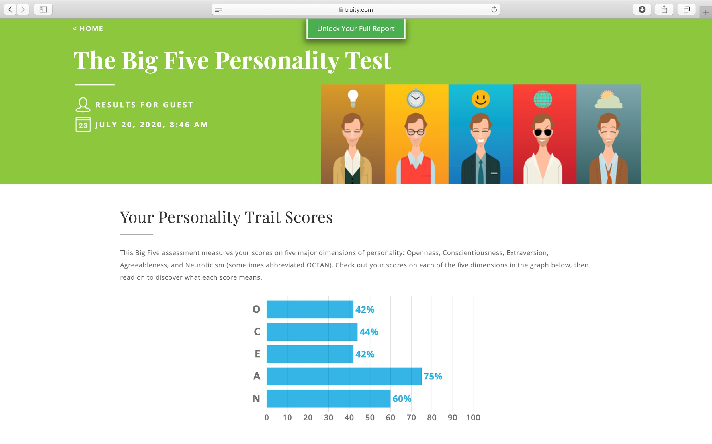
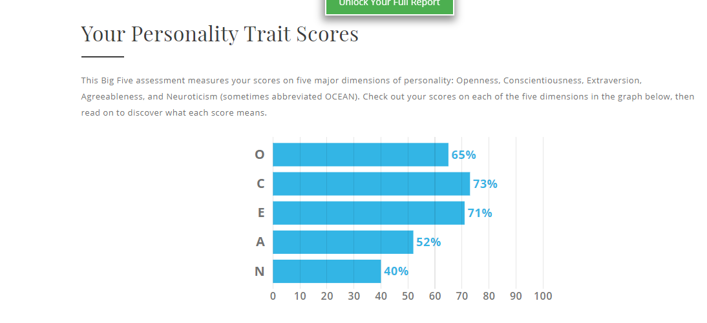
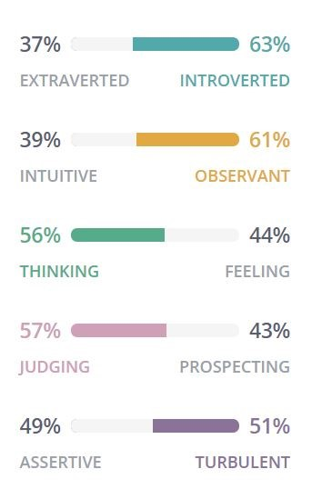
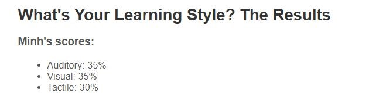
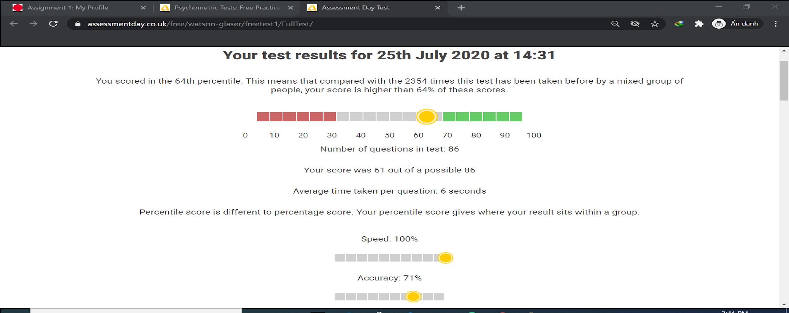
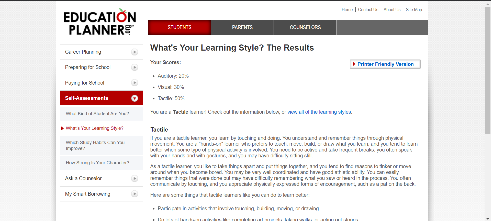
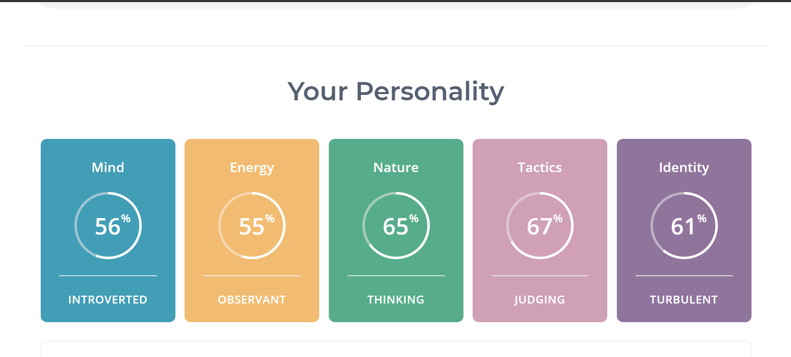
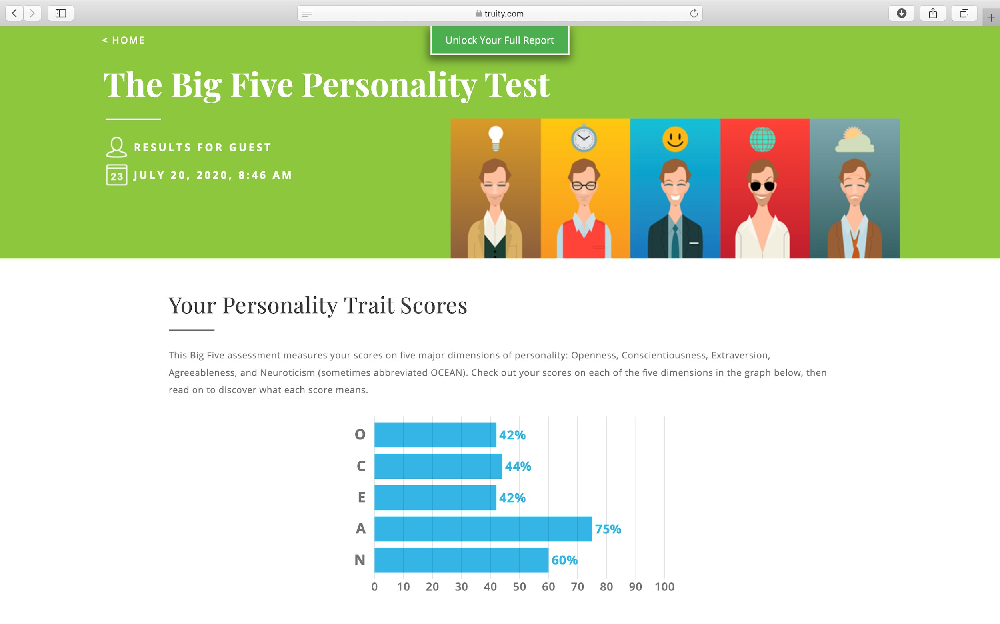
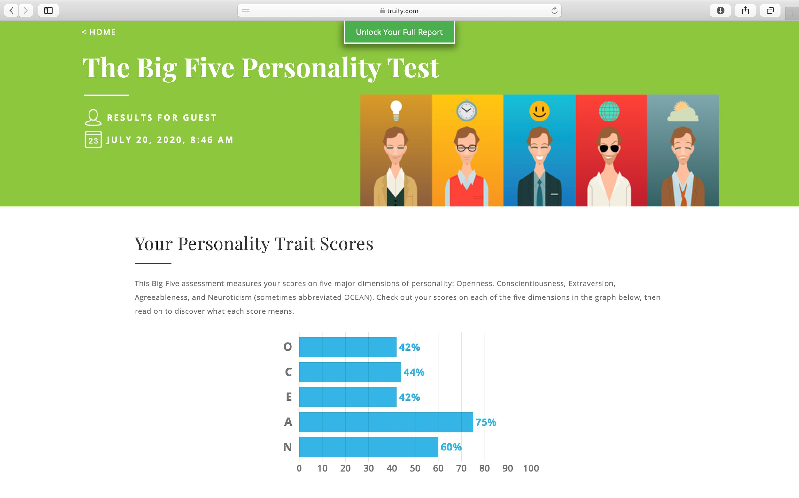

Firstly, I will introduce some information about myself. My full name is La Tran Hai Dang and my student number is s3836605. I have been living and studying in District 1 of Ho Chi Minh City for 20 years. Currently, I am a second-year student with my first semester in major that is a bachelor of information technology at RMIT Vietnam University. For me, the field of science and technology, especially information technology, has brought me the passion to learn new knowledge by the vastness of the IT world. I first encountered programming in grade 8, when it was the pascal programming language as an official subject in the school curriculum. I was intrigued by the command lines and the magic of computer algorithms. Since then, I have decided to enter the computer science class at high school and have achieved the silver medal for good students in IT. Besides, not only interested in technology but also music for example playing instruments and participating in volunteer activities are my hobbies. I hope that the time I spend studying and researching information technology will help me improve my professional knowledge and hands-on experience in the technology industry.
HUYNH VAN ANH
My full name is Huynh Van Anh, and my student ID is 3836320. I come from Vinh Long City, after graduating from Nguyen Binh Khiem High School, I am now studying at RMIT University. Previously, I was a student specializing in Chemistry. Instead of choosing to become a doctor or pharmacist, I followed my passion and became a member of SST (School of Science and Technology). I have a great curiosity to explore the Data Industry, and I expect to be a Data Scientist. Our team name is called '4tech', which stands for 'Four for Technology.' It is also similar to our Project Idea product's name.
TRINH QUANG MINH
My name is Trinh Quang Minh. My student ID is s3848088. I am Vietnamese, born in Ho Chi Minh city and I’ve spent three years studying abroad in Sydney, Australia and graduated high school there. My hobbies are playing an instrument (piano and guitar), listening to music, and playing games. I like playing games and I’m curious about how they operate behind the scenes. I also like to sit on my computer doing research, so I think doing IT is suitable for me. I’ve had the basic knowledge about coding in Python 3.0+ as it was a part of the study program that I took part in.
PHAM GIA NGUYEN
My name is Pham Gia Nguyen, my student ID is s2819521. Ho Chi Minh city is where I was born and grew up. Currently, in 2020, I am studying Information Technology program at RMIT with specialising in web development because I want to be a full-stack developer and mobile developer. In the past, I used to have a strong passion for football and swimming because I can connect closer to my friends and I can train myself. I have won a championship in a competition in high school. I have to admit that it is the best experience and exciting during my high school lifetime. However, my passion for IT became large when I saw my big brother, a competitive programmer, solving many challenging database problems such as arrays, multidimensional arrays and matrices in an online contest every weekend. Then, I follow his path to solving problems on the Leetcode website and join a contest at the weekends.
PERSONAL PROFILE
4-Tech Team
LA TRAN HAI DANG

When working in a team, one of the skills needed to get the most out of a job is listening. Based on the results of my learning style test, the auditory learning style allowed me to easily listen and understand the opinions of the group members. I am a practical and appropriate person to solve difficult group problems in a flexible way instead of working with boring theory. Besides, with good observation and ability to communicate I will be one of the connections that help the team can work together comfortably. Also, as a result of my personality test and Myers-Briggs, I always have a positive and responsible energy in my assigned work. This is important and necessary in team work because it brings dynamism, respect, contribution, and improvement of strengths and weaknesses to achieve the goals set by the group.
HUYNH VAN ANH

Because of having an ability to observe, pay attention to others. It is a high score for teamwork; moreover, the second point is being a decisive person in decisions. I confidently arrange the task and timeline to complete the work for our team. As an effective learner by hearing, I have a tendency to listen and synthesize different ideas before progressing a final decision. With all of the above, I believe that my good sides can play a crucial role in our group.
TRINH QUANG MINH


From the 3 tests’ results, I found out that I am more of an introverted person, so I and strong in the listening skill but I need to improve my communication skill much more to share ideas with my team as that is an important skill to have in order to bring the best results to the project.
PHAM GIA NGUYEN



Being critical thinking and judging, I can provide useful solutions and sources of the information for the projects with high accuracy. The outcomes will be affected by the decisions of each team member; therefore, having a good vision and judging can improve team performance. Also, I tend to learn by writing down, which I can remember much longer. It is great to share not only with my teammates but also for someone curious about what I have experienced and learnt.
IDEAL JOB
LA TRAN HAI DANG - IT OFFICER
- The skills:
+ Good understanding of the mobile device, computer system and other endpoint tech products.
+ Able to communicate in English.
+ Good communication and critical thinking skills.
+ Adaptive capacity in an open working environment, easily creating good relationships with customers is a plus.
+ Teamwork skills and support to promote effective work development with the IT team.
- The experience:
+ Having experience in the Education Industry.
+ Required for diagnostic skills and solve technical problems.
+ The willingness, passion, enthusiasm, and to learn new technology in a fluid and fast-paced environment.
+ Have technique and practice for client enquiries, troubleshooting and problem resolution and prioritization.
+ Tech savvy with working knowledge of office 365, PC Computing, Basic Networking, Printing, Drive Network, Antivirus on Client Side, Update at Client Side.
- The qualifications:
+ Degree or Bachelor of Information Technology/ relevant to the computer system.
+ Having CCNA, MCSA, MCSE, LPI certificates are preferable.
+ PMI Agile Certified Practitioner (PMI-ACP).
+ Microsoft Office Specialist (MOS) Certification.
HUYNH VAN ANH - DATA SCIENTIST
- Core skills:
+ Fluent in programming languages and data queries such as Python, Pandas, Numpy, My SQL, Oracle, SQL.
+ Some skills related to the specialized work of Data Scientist such as Data Visualization and Communication, Statistics, Data Wrangling, Data Intuition.
- Soft skills:
+ Communication : Ability to communicate with other people like teammates or customers.
+ Teamwork and Collaboration skills
+ Presentation: convey the results gathered in meetings
- The qualifications:
+ Bachelor's degree in Computer Science, Statistics, Economics, Information Technology.
+ It would be great to have a Ph. D. or MSc in Data Science or Operations Research or Statistics or other quantitative fields.
- The experience required
+ Fluent in programming skills and fluent in the libraries and frameworks available.
+ More than 3 years working in a position related to data science.
TRINH QUANG MINH - SOFTWARE ENGINEER
- The skills
+ Teamwork is highly required.
+ Strong in data structures, algorithm, storage systems and problem solving.
+ Excellent software development skills in multiple languages and environments: Python, NodeJS, Java, Scala…
+ Experience in Machine Learning / Deep Learning is a plus.
+ Experience with third-party libraries and APIs.
- The experience:
+ 2+ years of experience with high-traffic distributed systems and client-server architectures.
+ Minimum 3 years of experience working in C#.
+ Experience building complex and impactful software in a team environment.
+ Ability to adapt quickly to an existing, complex environment.
- The qualifications:
+ Minimum bachelor’s degree in computer science, programming, mathematics, or a related field.
+ Master a variety of programming languages such as: C++, C#, JavaScript, and Python and practice building software.
PHAM GIA NGUYEN - WEB DEVELOPER
- The core skills and experiences:
+ 3 years of experience working as a Fullstack / Software Developer.
+ Experience HTML, CSS, Javascript
+ Familiar with framework and library for the front-end: React, Vue.js, Angular.
+ Experience with programming languages and back-end such as Java, PHP, Python, JavaScript (NodeJS).
+ Experience with APIs
+ Experience with Amazon Web Services (AWS) platform.
+ Experience with SQL such as MySQL, SQL Server for storing the database.
+ Experience with NoSQL database
- Soft skills:
+ Be able to work with other engineers in teams to promote technology and ensure consistency of the system.
+ Can provide recommendation and advice for continuous improvement.
+ Be able to work independently and collaborate with other team members to fulfil team results.
+ Communicate in English.
INDUSTRY DATA
Job Titles for group’s ideal jobs ranked in terms of demand from employers:
La Tran Hai Dang - IT officer
Huynh Van Anh - Data Scientist
Trinh Quang Minh - Software Engineer
Phạm Gia Nguyễn - Web Developer
4-TECH GROUP
How do the IT-specific skills in your required skill set rank in terms of demand from employers?
JavaScript
Python
Java
SQL
How do the general skills in your required skill set rank in terms of demand from employers?
Communication skills
Problem solving
Critical thinking
What are the three highest-ranked IT-specific skills which are not in your required skill set?
SAP
Graphic Design
Microsoft Windows
What are the three highest-ranked general skills which are not in your required skill set?
Writing
Planning
Multi-Tasking
La Tran Hai Dang - IT officer
How do the IT-specific skills in your required skill set rank in terms of demand from employers?
Python
HTML/CSS
Javascript
UI/UX
How do the general skills in your required skill set rank in terms of demand from employers?
Critical thinking
Communication skills
Analytical skills
Organisation and planning strategic
What are the three highest-ranked IT-specific skills which are not in your required skill set?
IT project management
Problem solving abilities
Programming skills
Technology support and IT Service desk
What are the three highest-ranked general skills which are not in your required skill set?
Teamwork and collaboration
Communication skills
Problem solving
Writing
Having looked at the Burning Glass data, has your opinion of your ideal job changed? Why or why not?
In general, IT staff play an important role in monitoring and maintaining the operation of computers and networks of an organization or enterprise. In the era of technology 4.0, the emergence of new technologies in everyday work requires someone to install, diagnose software and hardware failures, and resolve these technical problems.
The work is as well as general knowledge about how computer systems are used and applying technical understanding relevant to computer software or hardware. For other IT students, their ideal job is usually an application developer, a website developer or one of the other specific IT fields. But for me this is considered an ideal job because it gives me an overview of a big picture of the world of technology instead of just focusing on a specific field.
After consulting the Burning Glass data, I decided I would not change this ideal job because of the opportunities that this job offers me. This work provides a dynamic, comfortable and professional working environment with no sitting at the desk all day. It opens up many possibilities for developing my skills, building relationships, updating new technologies, not just software and hardware, and training my English skills.
In short, this job will not bring a significant income and is not the dream job of many people. However, IT officers are an indispensable part of any business, who helps to bring about the smooth and balanced working of a computer system. Besides, this job creates a great career opportunity in the era of industrialization and modernization today.
Huynh Van Anh - Data science
How do the IT-specific skills in your required skill set rank in terms of demand from employers?
SQL
Python
R language
How do the general skills in your required skill set rank in terms of demand from employers?
Problem solving
Presentation skills
Analytical skills
What are the three highest-ranked IT-specific skills which are not in your required skill set?
JavaScripts
C#
C++
What are the three highest-ranked general skills which are not in your required skill set?
Writing
Troubleshooting
Multi-Tasking
Having looked at the Burning Glass data, has your opinion of your ideal job changed? Why or why not?
After consulting the information provided by Burning Glass Data, I still have not changed the viewpoint of my ideal Job. The following are additional analyzes for the above statement:
- The Specialised Skills listed Python with the low employers' demand and without the existence of the R programming language. However, according to the information provided by the Online data science community Kaggle's annual survey, “ Python is utilized by 76.3% of respondents and R by 59.2%” . [1]. So Python and R still play a crucial role in the Data area.
- Presentation skills, as well as Analytical skills, support Data scientists to demonstrate their results with other teams and customers who cannot 'read' the statistic.
Although the Data Science Job was not listed as a high demand job in the Burning Burning Glass Data 2018, I still love to do this job because of my passion for data, and I believe in the future with rapid development, the demand for employers to data also increases.
Trinh Quang Minh - Software Engineer
How do the IT-specific skills in your required skill set rank in terms of demand from employers?
Python
JavaScript
Java
How do the general skills in your required skill set rank in terms of demand from employers?
Teamwork
Communication skills
Critical thinking
Future demand skill:
Project management
React
JavaScript
Writing
QA/QC
Detail-orientated
What are the three highest-ranked general skills which are not in your required skill set?
Organizational skills
Troubleshooting
Planning
Having looked at the Burning Glass data, has your opinion of your ideal job changed? Why or why not?
After looking at the Burning Glass data, my opinion on my ideal job has not changed. In my views, a Software Engineer is the one who has the ability to create new advanced, innovative products to help the community in various fields of life. This job required to have a high determination and a mindset of not giving up which I have as being a Software Engineer is considered to be one of the most stressful jobs. For me, being a Software Engineer is one dream I want to have come true in the future.
In my opinion, at this time of life where it is called the 4.0 ages, the age of technology, this is the time when the people want the most advanced and innovative technologies for their life. That becomes a big chance for developers to have their creativity to actually act and create products that can supply the needs for users and this is the time where different companies are trying to recruit the qualified employees to be a part of their families. Nowadays, thanks to the innovating of programming languages, they have come up with an easy high-level programming language called Python, which can be approachable by everyone at the biggest operating system (Microsoft Windows and MacOS). According to different surveys on coders of all ages, Python is easy to learn, and it can be really efficient as there are many different sources and libraries for users to work on their project. Even though in the Burning Glass data, Python is not one of the top biggest languages, these results were in March 2018 and now is August 2020, which means more than 2 years already and it is way different now.
Besides that, Software Engineers are the ones who bring needs in different areas of life into their products (medical, entertainment, etc.). Without these people, it is a big loss to a company when it comes to competing in this time era.
Phạm Gia Nguyễn - Web Developer
How do the IT-specific skills in your required skill set rank in terms of demand from employers?
JavaScript
SQL
Java
AWS
How do the general skills in your required skill set rank in terms of demand from employers?
Group working
Able to communicate in English
Problem-solving skill
What are the three highest-ranked IT-specific skills which are not in your required skill set?
Graphic Design
Machine Learning
SAP
What are the three highest-ranked general skills which are not in your required skill set?
Planning
Communication
Writing
Having looked at the Burning Glass data, has your opinion of your ideal job changed? Why or why not?
Obviously no, there is an enormous demand for constructing and developing websites to meet human's desires. Currently, around 1.8 billion websites are created with approximately 400 million active.
Although the job titles for web developers are around 381 in Australia in 2018, the number of websites are growing very fast. To be clear, it is not very reliable to use outdated-data to compare with the current jobs. There are so many web applications we use nowadays such as Facebook, Youtube, etc. Note that, for people who use computers, they preferably use a web-based platform, which is convenient to open multiple websites for doing their work and easier for searching for their likes. Therefore, seeing fewer jobs for a web developer in a country is not right as a whole.
Last but not least, the decentralized web will be the next era of web development, in which user's data will be owned by themselves and not collected by the organisation or company. Thus, jobs for a web developer will be in high demand.
IT WORK
4-TECH TEAM
This is an interview with the IT Professional about the IT Work
DR. JONATHAN CRELIN
RMIT Senior Lecturer
A specialist in digital security and forensics
1. Please tell us about your IT work. What exactly do you do?
I teach computing although my background is quite complicated because I was not originally an IT professional. I came into computing as my first degree was in psychology. When I was studying for my degree, in the 1980s, microcomputers were starting to be used more commonly. A lot of psychology about doing mathematical tests of significance. For example, when you experiment with making a decision about whether the results are due to chance or actually unlikely to be significant. As a result, I did a lot of programming of those mathematical tests and that's how I actually started being interested in computing and also being realizing that the way you present information in the system is really importantr
2. Please tell us about the industry you work in?
As a lecturer, I started working in computing in 1992, that was when I did my PhD. Again, when i started working on my PhD, I worked in the university that used mackintoshes. I was very interested in graphic user interfaces and the way they present information, so my PhD was about different styles of user interface. Later, I went to work in the university in the UK because the curriculum included a topic area called human computer interaction, which is cognitive ergonomics. This was the area I was building courses about human computer interaction in the early 90s, which is still my core subject. After that, I became interested in another area called computer forensics, which is a very related area because it's about how people use computers when they are engaging in criminal activity.
3. What other kinds of work do you have to do?
I did actually work in the period of time in the civil service department called the land registry. During the period that I was working there, most of the work I did was actually manual. We had large rooms full of filing cabinets, full of paper records but whilst I was there they were starting to change that information to computer-based records. Every piece of land you have to have a list of the legal constraints on that land, the proprietor of the land. You need to have a map of exactly the location of the land, so you can identify it. There are lots of different kinds of media present within each of those records for each piece of land and what priority of work you have to do.
4. Who are all the different people you interact with in your work? Please tell us about them?
Work primarily in University, so mostly teachers/lecturers and students. Requires not just passing ideas but also need to have two way interactions. Besides that, interactions with different types of computers’ systems.
5. Please tell us about your interaction with other IT professionals?
As a lecturer I mostly work with other lecturers inside and outside my university. Usually we would talk about new projects/ideas that we find fascinating and we would discuss about the new topics and different ways to educate our students.
6. What about your interaction with clients or investors?
As I’m a lecturer so I would consider my students to be my clients that I mostly work with. I would judge my success based on their levels of achieving the knowledge that I shared with them and how they apply those to their life in the future.
7. What aspects of your work do you spend most time on? Please tell us about these.
I spend a lot of time interacting with students to comprehend if they understand the lecture if they have any difficulties. Besides, I'm researching new technologies to modernize the lecture. Because lesson programs always have to be updated according to contemporary times, lectures must also be renewed to keep up.
8. Which aspects of your work do you spend most of your time on and find most challenging?
Teaching about the subject is challenging as new exciting and new things keep being introduced as time goes on, so it is challenging to adapt to those and transfer it the easiest way to students. In addition to the challenge of updating much new knowledge, I also have to try to develop my lecture adequately and more clearly to understand. Use simple words to describe broad and moderately confusing topics for beginners.
9. Finally, can you share an example of the work you do that best captures the essence of the IT industry?
Everything is the same except that the focus of the environment keeps shifting and keeps changing throughout the time. For example, I learn new applications produced to work to supply the original center of the situation. Besides, I also update the information by going to many different companies and working conditions to observe how they handle the times' innovation.
IT TECHNOLOGIES
Cloud, services, and servers
Autonomous vehicles
Robots
Machine learning
Cloud, services, and servers
What do cloud, services, and servers do ?
The cloud, services, and servers may look different, but they have a close relationship together. Those things work in tandem to create a cloud computing system, which is directly connected to the internet to store web data, store and share data [2]. Cloud computing brings convenience and security to customers by being independent from your local storage environments instead of physical storage devices. It allows users including individuals, organizations and businesses to transfer files and folders quickly and flexibly in separate ways. User data is encrypted and stored in servers owned by cloud service providers. However, customers need to pay a fee according to the contract signed between the service provider [3]. This brings a small financial benefit to businesses, especially small and medium enterprises, instead of investing large sums of money to invest, upgrade and maintain the local information server system. Nowadays, with the advent of new advanced technologies, cloud computing has developed and become one of the essential parts of the computer industry.
What is the state of the art of this new technology? What can be done now? What is likely to be done soon (say in the next 3 years)? What technological or other developments make this possible?
Over the last ten years, the application of cloud computing at the consumer level to businesses has witnessed explosive developments and has become more widespread. Microsoft, Adobe, Oracle, are one of the software providers who have endeavored to promote and encourage consumers to use separate online storage system services instead of on-site storage, provided by payment methods based on the available subscription packages [4]. This is also considered to be equivalent to cloud computing services.
Today, mobile cloud computing is equipped with new infrastructures, which is exploited using the link and the combination of cloud platforms and mobile devices. Currently, cloud computing has been able to handle large tasks with large storage capacity. According to a 451 analysis study, more than one-third of the total workload of businesses is primarily running on the public cloud in 2019 [4]. Besides, IDC research shows that in 2018 more than one half of IT infrastructure spending is spent on cloud platforms and will reach 60-70% of this entire infrastructure, including services, software, and technology by 2020 [4]. That is a strong development as well as the need to use cloud computing is increasing.
In the next 3 to 10 years, the world will witness the remarkable development of clouds, services, servers. Based on a survey by Google Cloud, more than 47% of businesses have already used private and public cloud platforms for their IT facilities and this percentage has increased approximately 30% about the conjecture that the enterprises have believed cloud computing will fulfill over a quarter part the requirement in 2029 [5]. With the large support of executives, the cloud will rise to the forefront in the next decade from now around the world. Cloud computing contributes to profitability in revenue and becomes a driving force for socio-economic development in the next few years.
The multi-cloud development model, which represents the platform's future mission, is being selected for future implementation by leveraging the interference between different cloud service providers in many kinds of ways. Service providers have been racing to come up with 5G network technology to satisfy this demand. 5G networks will address issues related to connection speeds and will be available soon [6]. That advent is said to be a stepping stone to improve the connection quality between the local system and the cloud in an age when all data is systematically moved on the internet. Besides, information security when using cloud computing today is one of the topics that are security experts in general and service providers in particular. Moreover, the artificial intelligence system is being carefully researched and measured to connect with the cloud to pass big data and suit the functions of each company. Efficiency and excellent benefits will be enhanced thanks to the combination of 2 smart technologies, including data analysis and cloud computing. This is one of the standard technologies that will be improved to bring the balance of quality, intelligence, and safety that suppliers bring to customers.
What is the potential impact of this development? What is likely to change? Which people will be most affected and how? Will this create, replace or make redundant any current jobs or technologies?
To analyze and answer the question: “how cloud, service, and server technology has impacted industries during the globalization phase ?”, cloud computing will change in the direction of improving optimal data storage capacity and providing a peace of mind in data center security in the future. Cloud computing tends to transform storage-based operations and transport and secure data in the cloud instead of local server systems. In general, cloud computing has affected the economic and social development speed in many countries by directly impacting the finance of businesses in many different fields [7]. The aggressive race to bring existing offerings from corporate corporations to the public onto multi-cloud platforms has contributed to transforming the way technology intelligently operates.
The transformation of technology between local server systems to cloud computing has largely brought about a positive impact on small and medium enterprises. This development has opened up career opportunities related to the IT industry instead of cutting the staff of server facility management. Tech companies are constantly recruiting key positions to ensure the quality and performance of cloud platforms. Sometimes these systems will have technical and communication problems responsible for providing optimal solutions and fixing unexpected problems. Today, the problem of database security is very focused by companies, especially the risk of being attacked through cloud data is increasing. Employers often offer attractive perks to attract excellent candidates for these positions, which play a role in providing rights and handling legal issues about personal data use, carefully guarding security, and preventing third-party threats. In a nutshell, cloud computing has laid a necessary foundation and transferred from traditional to more modern technologies and created jobs for many employees with many different positions to match the speed of growth economic, social, technology.
In your daily life, how will this affect you? What will be different for you? How might this affect members of your family or your friends?
It can be seen that cloud storage applications, such as Google Drive, Onedrive, iCloud are no longer unfamiliar to the learning and working life of many people today. For me, these storage services give me the convenience of using computers. It helps to improve the problem of wasting computer hard drive space when storing all the essential documents, images, and movie files. Besides, with a regular moving schedule, cloud computing has helped me overcome the inconvenience. Instead of all data being copied via USB or portable hard drive from the desktop to be used on but now I can access my own cloud data anywhere, even around the world, with just one click of an internet connection. The cloud application allows mobile devices to automatically update from new updates from cloud service providers when there is a change in memory capacity and upload original files to the cloud. This is essential to prevent the loss of important data caused by the carelessness of the user. The above useful features have made me change how I store data and cloud applications that are indispensable in my phone and computer when studying and working every day because of flexible backing and recovering personal documents anywhere, anytime.
Cloud storage is expanding in educational and professional work environments. Educational institutions and schools are beginning to use technology in the teaching process including cloud computing and encourage students to use cloud platforms in submitting and storing assignments online. That is also why my friends and I communicate more with each other in sharing files of assignment or media through cloud applications. Developers of cloud storage applications have come up with usage packages that include personal and especially home cloud sharing, which is used by my family. This helps my family bring information connection among family members, making it easy and convenient to store meaningful memories. However, each person needs to have their own storage space to protect privacy is a basic human policy.
 
